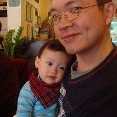

指導老師:
陳宏智 老師
首先，歡迎大家加入程設班！！
復旦程設班的前身，是訓練資訊學科能力競賽比賽同學的計畫。但學長們對於程式設計的渴望，在他們國中時，就陸續請求加入訓練，人數開始增加。後來鍾鎵駿、黃先鼎、王宗仁、陳耀恩、羅子原、黃琪文、張任廷、洪冠群、蔡語謙等學長姐，努力宣傳招生，設計許多的社團活動，讓程設班同學樂於互相交流，一同去參與比賽，於是程設班有了今日的規模。今日連教學講義、招生微電影都誕生了。這一切都不得不佩服這學長姐的努力和對程設班的熱愛。學習程式設計是我們的主要目標。因為你想、你喜歡寫程式，今日才有你的加入。但更希望你能在此，感染到學長們的熱情、進而喜歡來到這個社團。在你要離開這個班時，期待你能帶著滿滿的知識和回憶，自豪的說：「我很開心來到這裡，復旦程設班，讚啦！」
創班班長:
鍾鎵駿 學長

從程設班創班至今，每年都會找時間回去看看，看看自己那年親手種下的苗，至今是否已經漸漸茁壯，茁壯到可以獨當一面。看著自己的小孩般地長大，其實心中有無限的感慨，包括這個班最後是否存亡與否，畢竟就像是我的小孩般，都會期待望子能龍、望女成鳳，讓程設班能繼續發揚光大。
看著每屆每屆的帶班，看到每屆每屆大家的學習動力，說真的很感動，大家看的出來有為程設班想未來的發展，而不是走一步算一步的感覺，想讓程設班變成，只要南桃園的程式設計班，就會聯想到復旦高中，就想代名詞般的光榮。最後很希望在我好幾十年過後，回到復旦還能看到程設班的招牌仍然持續為復旦發揚光大，讓喜歡程式的人，有個好環境學習到在別學校學不到的程式設計，才是復旦程設班的目的所在，加油!!
現任幹部
- 班長 張瀚文
- 副班長 高程昱
- 教學長 何培揆
- 教學 鄭豫澤
- 教學 姜漢暘
- 總務長 林承緯
© Copyright Eugene Y.C Tsai C++ 2016